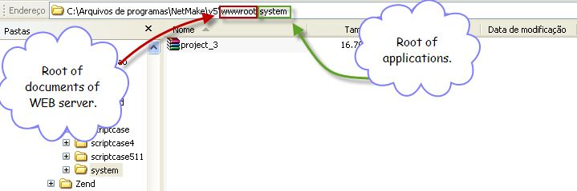
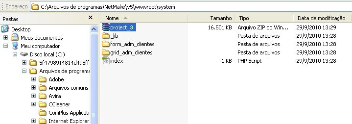
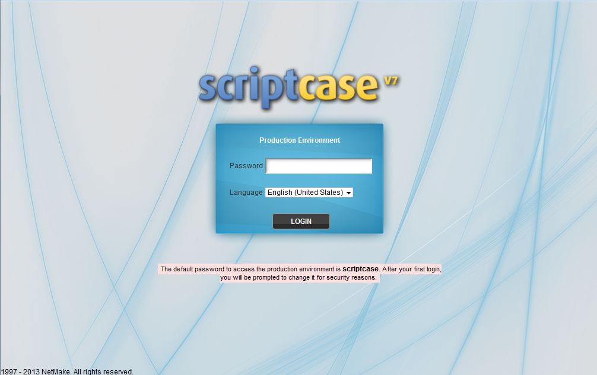
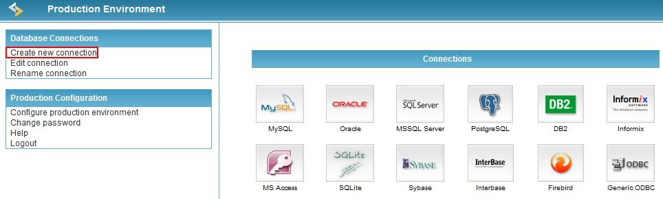
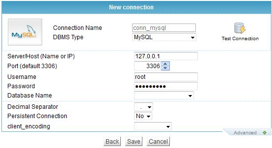

Extract the zip file.

Includes the common libraries in the Production environment directory _lib.
In the example below was created a directory called "system" to store the applications.

Permissions – Reading, Write and Execution.
For Windows Servers using Web IIS Server, is necessary to define the permissions in the directory _lib (common libraries),
and in the CMD files (C:\WINDOWS\system32) for IIS users (IUSR_NOME-DO-SERVIDOR) .
For Unix environment, is necessary to set common libraries permissions recursively. (directoty _lib, subdirectories and files)
Example: chmod 777 _lib -R
Creating the connection with the Database using the management interface.
Step 1: Locate the production environment management interface, in the directory _lib.
In the example: http://host or ip/system/_lib/prod

Step 2: Select Create new connection.

Step 3: Select the DBMS. In the example was used MySQL Database.

Step 4: Enter Database information (server id or name).
Step 5: Enter Database user id and password.
Step 6: Enter the same connection name defined in the development environment (ScriptCase).
It must be the same name since the applications are configured to use it.
Step 7: Test the connection and save the configurations.
Step 8: Run the application to verify it.
After clicking in Advanced.
Step 9: Select the decimal number separator to use in the database.
Ex: 1.21 or 1,21
Step 10: Choose if the connection will be persistent* or not.
Persistent Conexion: Persistent connections are connections that do not close when the execution of your script ends.
Step 11: If you want to change the default charset (latin1, to MySQL) to record or edit to the database select the desired encoding.